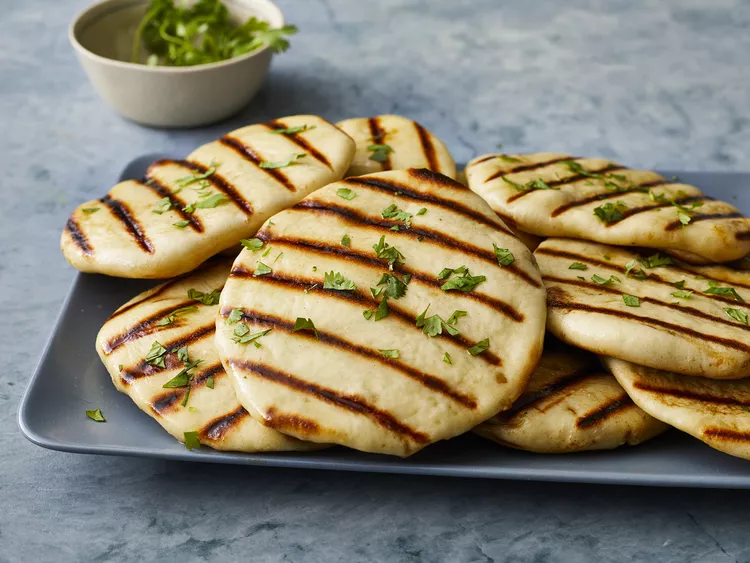

Naan Recipe

Description
Naan (pronounced nahn) is an oven-baked, leavened bread that is stuffed and flavored in a variety of ways.
An essential part of South and Central Asian cuisine, naan is easy, affordable, and makes the most of
pantry ingredients you already have on hand.
Ingredients
- Yeast
- Water
- Sugar
- Milk
- Egg
- Vegetable Oil
- salt
- Flour
- garlic
Steps
- Dissolve yeast in warm water in a large bowl. Let stand about 10 minutes, until frothy.
- Meanwhile, generously oil a large bowl.
- Stir sugar, milk, egg, and salt into the yeast mixture. Mix in enough flour to make a soft dough.
- Knead dough on a lightly floured surface until smooth, 6 to 8 minutes.
- Place dough in the prepared oil, cover with a damp cloth, and let rise until doubled in size, about 1 hour.
- Punch down dough on a lightly floured surface, and knead in garlic. Pinch off small handfuls of dough about
the size of a golf ball; you should have about 14. Roll each piece into a ball and place on a tray. Cover with a
towel, and allow to rise until doubled in size, about 30 minutes.
- Meanwhile, preheat a large grill pan over high heat.
- Roll each piece of dough into a thin circle.
- Brush some melted butter on the preheated grill pan. Place a few pieces of dough in the pan (as many as you can
fit) and cook until puffy and lightly browned, 2 to 3 minutes. Brush butter onto the uncooked sides, flip, and cook
until browned, 2 to 4 more minutes. Remove from the grill and repeat to cook the remaining naan.